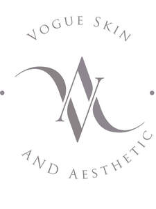

Trade Mark Journal No.2025/035 29 August 2025
UK00004214516 5 June 2025 (3,5,44)

- Class 3
- Skincare cosmetics; Skincare preparations; Anti-aging moisturizers; Cosmetic moisturisers; Beauty serums; Facial moisturisers [cosmetic]; Skin cleansers [cosmetic]; Skin moisturisers; Skin care lotions [cosmetic]; Skin care cosmetics; Cosmetics; Moisturisers [cosmetics]; Skin moisturizers used as cosmetics; Acne cleansers, cosmetic; Non-medicated skincare preparations; Beauty lotions; Skin moisturizer; Skin moisturiser; Skin moisturizers; Skin care creams [cosmetic]; Moisturisers; Beauty care cosmetics; Cosmetic creams for the skin; Skin creams [cosmetic]; Skin creams [for cosmetic use]; Moisturiser; Skin cleansers; Cosmetic facial lotions; Facial lotions [cosmetic]; Skin care oils [cosmetic]; Beauty creams; Skin lotions; Lotions for the skin; Cosmetic massage creams.
- Class 5
- Injectable dermal fillers; Injectable dermal filler; Pharmaceutical skin lotions.
- Class 44
- Medical care; Medical care services; Medical services; Medical and healthcare services; Medical spa services; Medical assistance; Medical tele-reporting [medical services]; Medical nursing; Nursing, medical; Medical clinics; Medical counseling; Health clinic services [medical]; Medical nursing services; Medical clinic services; Clinic services (Medical -); Medical consultations; Medical testing; Medical screening.
Vogue Skin & Aesthetic Limited
Representative: Laura Mullarker